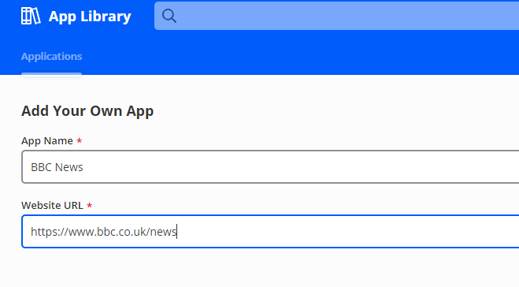
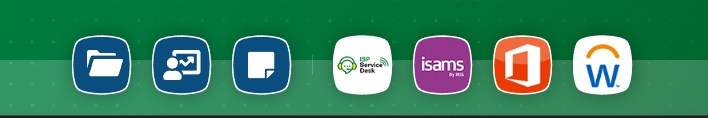
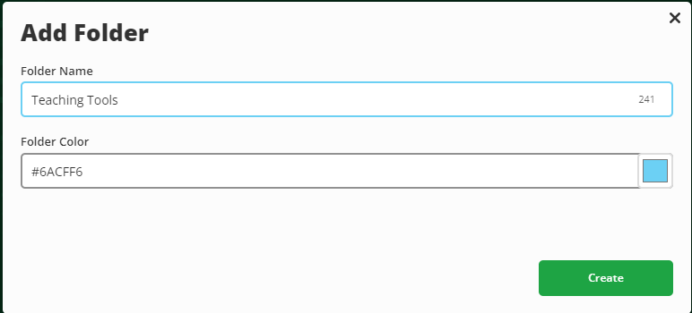

ClassLink offers a bit more flexibility and personalisation, here are a few exampes of what can be done.
Folders
- Right-click anywhere on your ClassLink dashboard and choose Add Folder
- Give it a name (for example, “Teaching Tools” or “Admin”)
- Drag and drop apps into the folder or right click and 'Add to Folder
Favourites
- Click the star icon on the app to add it to your favourites bar / Right click and select 'Add to Favourites'
- To remove it later, click the star again or Right click and select 'Remove Favourite'
- You will see your Favourites at the bottom of the page
Custom Links
- Click the ‘+’ icon at the top of the dashboard and choose Add App
- Select Add Custom App
- Enter the web address (URL) and a name for it
- Choose an icon if you like, then click Save


